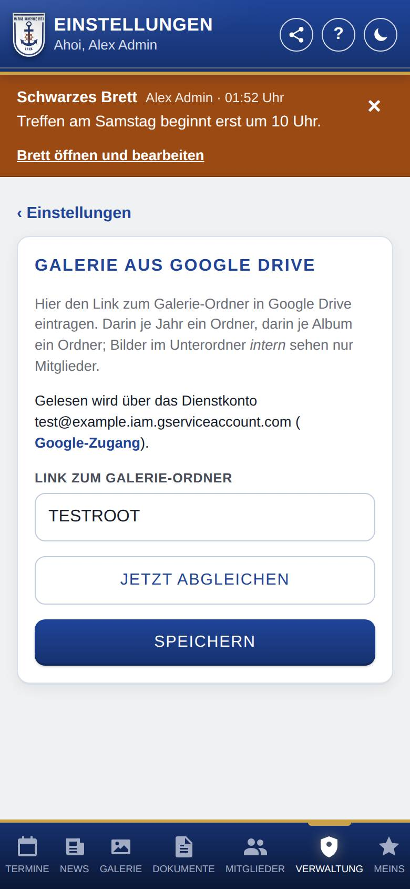
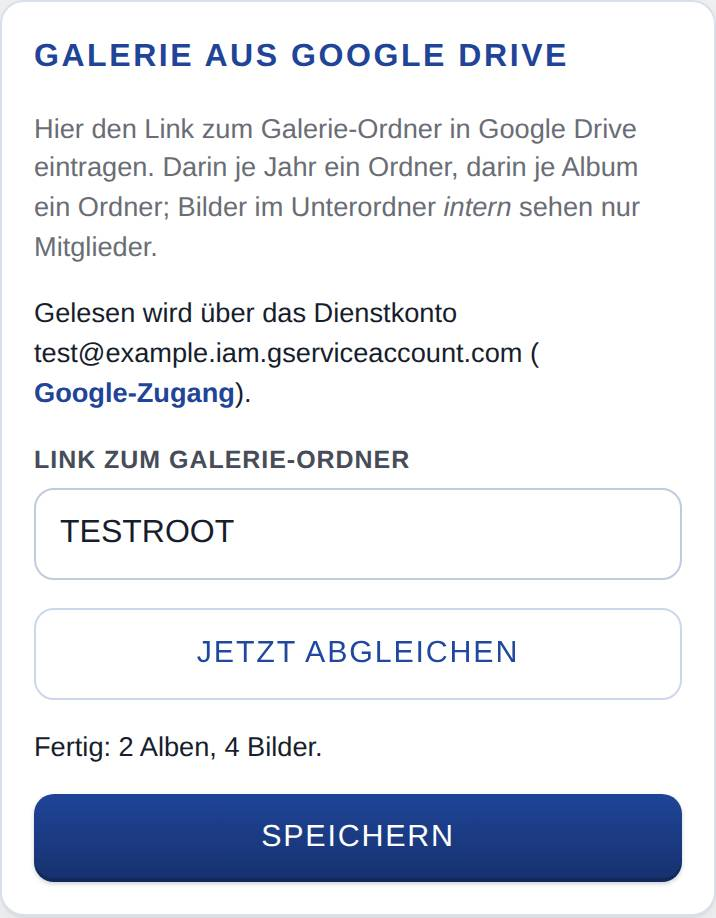

Galerie einrichten
Hier verbindest du die Galerie mit einem Ordner in Google Drive. Die App zeigt die Fotos daraus als Alben und holt neue Bilder von selbst dazu.

So öffnest du die Seite
Tippe unten auf Verwaltung, dann auf Einstellungen und auf Galerie. Im Einrichtungsassistenten steht derselbe Abschnitt im Schritt für die Galerie.
Was du hier siehst
- Gelesen wird über …: welcher Google-Zugang genutzt wird, mit einem Verweis auf Google-Zugang. Gibt es noch keinen, steht das hier.
- Link zum Galerie-Ordner: die Adresse des Ordners in Google Drive.
- Letzter Abgleich: …: erscheint, wenn beim letzten Abgleich etwas schiefging, mit der Meldung.
- Jetzt abgleichen: liest den Ordner sofort ein (erscheint, sobald ein Ordner eingetragen ist).
- … Bilder ließen sich nicht laden – anzeigen: erscheint nur, wenn Bilder nicht geladen werden konnten.
- Speichern: übernimmt den Link.
So gehst du vor
Den Ordner in Google Drive vorbereiten
Lege in Google Drive einen Galerie-Ordner an. Darin kommt je Jahr ein Ordner und darin je Album ein Ordner mit den Bildern. Bilder im Unterordner intern eines Albums sehen nur Mitglieder.
Den Ordner verbinden
- Richte zuerst den Google-Zugang ein. Mit einem Dienstkonto gibst du den Galerie-Ordner vorher für dessen E-Mail-Adresse frei (Rolle Betrachter).
- Öffne den Galerie-Ordner in Google Drive und kopiere die Adresse aus der Adresszeile des Browsers (z. B.
https://drive.google.com/drive/folders/…). - Füge sie bei Link zum Galerie-Ordner ein und tippe auf Speichern.
- Tippe auf Jetzt abgleichen. Die App liest die Alben, bereitet die Bilder auf und zeigt dabei den Fortschritt, am Ende zum Beispiel „Fertig: 3 Alben, 12 Bilder.“

Bilder ansehen, die sich nicht laden ließen
- Tippe auf … Bilder ließen sich nicht laden – anzeigen. Die Liste zeigt je Bild Dateiname, Album, Anzahl der Versuche, die Fehlermeldung und In Google Drive öffnen.
- Lege das Bild als JPG in denselben Ordner in Google Drive und entferne das alte.
- Tippe auf Alle erneut versuchen. Die App versucht alle noch einmal und gleicht danach ab.
Gut zu wissen
- Was beim Abgleich nicht fertig wird, bereitet die App stündlich im Hintergrund weiter auf. Neue Bilder in Google Drive kommen ebenso stündlich dazu.
- Kann der Server ein Format nicht lesen (z. B. RAW, TIFF, HEIC), nimmt die App das in RAW-Dateien eingebettete JPEG oder das Vorschaubild von Google. In der Liste bleiben vor allem beschädigte Dateien.
- Die Galerie erscheint für die anderen erst, wenn der Bereich an und ein Ordner eingetragen ist (siehe Bereiche).
- Wie der Abgleich zuletzt lief, zeigt auch die Ampel unter Zustand und Updates.
- Mit WordPress gibt es dieselbe Einstellung auch im WordPress-Backend auf der Seite der App (Feld „Galerie-Ordner“, Knopf Galerie speichern).